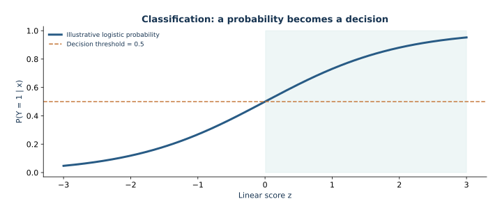

02 — Classification: predicting a binary outcome
This lesson connects Bernoulli likelihood and convex logistic regression to probability estimates, ranking metrics, calibration, and a cost-based decision threshold. It uses generated churn data that represent no real customers or retention program.
The route derives logistic loss, gradient, and Hessian, then builds a leakage-safe pipeline for numerical and categorical inputs. It explains how fit, predict_proba, and predict differ, and why probability, ranking, and thresholded actions answer separate questions. A fixed small example isolates scikit-learn's inverse regularization parameter C. The main workflow selects C by training-only cross-validation, inspects probability and classification behavior on validation data, chooses a threshold under stated toy costs, and evaluates the frozen choices once on the final test set.
For the installed lbfgs solver, the lesson connects C to the mathematical penalty, including fitting-row count and sample weights. It states the assumptions behind the cost threshold: calibrated probabilities, known constant costs, and unconstrained decisions. Generated-data performance cannot support customer interventions or causal claims.
Open and run
Follow setup in the repository README, then open lesson.ipynb in JupyterLab with the Mathematical ML kernel. It searches parent folders for data/churn.csv, so it works from the repository root or this lecture directory.

Illustrative sigmoid and decision threshold; a probability and an action are different outputs.